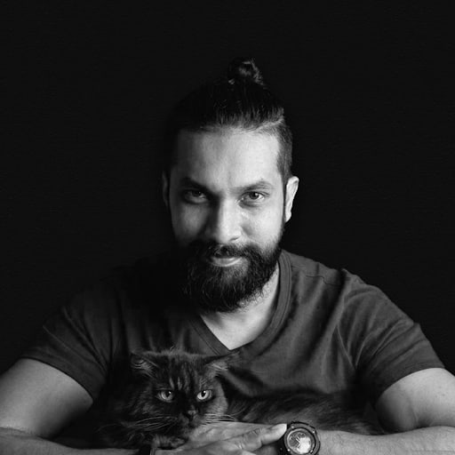

The origami cat in my logo was inspired by my own cat, representing curiosity, creativity, and the attention to detail that shapes my approach to photography.
I specialise in architecture, interiors, and hospitality photography. Based in Sri Lanka, I'm fascinated by thoughtful design and the way well-crafted spaces shape our experiences. My work is primarily based here, where I collaborate with architects, designers, hotels, and brands to create imagery that captures the character and story of each project. I also have the privilege of working internationally on projects beyond Sri Lanka.
My background in engineering gave me an appreciation for precision and detail, while photography has allowed me to explore the creative side of storytelling. I'm always learning, drawing inspiration from photographers around the world, experimenting with new techniques, and embracing technology that helps me create stronger, more meaningful images.
I believe the best work comes from collaboration. I enjoy building genuine relationships with clients, understanding their vision, and creating images that reflect the personality of their brand while showcasing the spaces they've worked so hard to bring to life. My goal is to create photographs that are not only visually compelling, but also authentic, meaningful, and timeless.
Sri Lanka, available worldwide
Architecture & interiors, aerial, landscapes
How it works
Tell me about your project.
We'll discuss your requirements.
I'll provide a quotation and proposed schedule.
Photography takes place.
Professionally edited images are delivered.